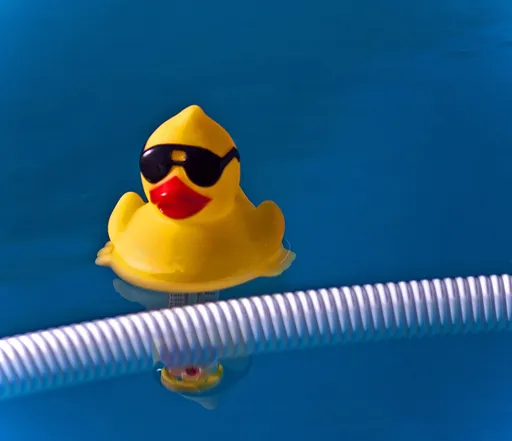
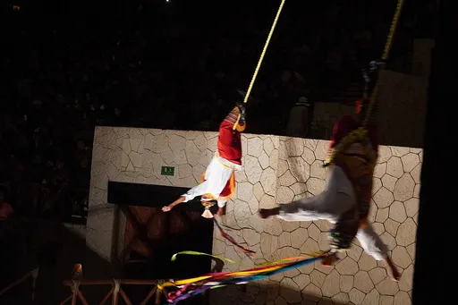
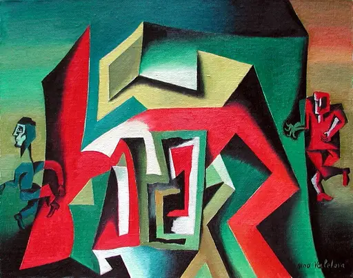
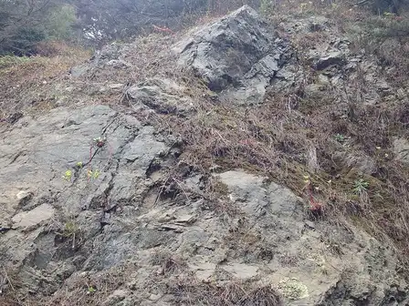
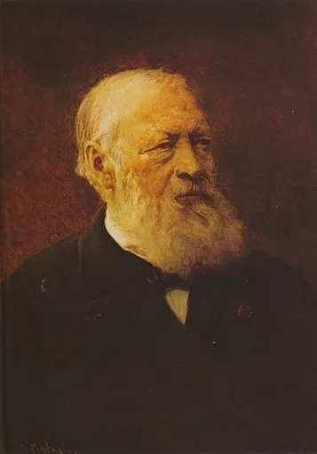

Reject an image by adding its slug to public/charades/charades-hard/reject.txt (append ! to keep it word-only), then re-run node scripts/genimages.mjs.

Buoyancy buoyancy CC BY-SA 2.0 · Dorian Wallender from Lake Havasu City, Arizona, USA · sourceButterflies in your stomach butterflies-in-your-stomach CC0 · Darko Djurin (https://pixabay.com/en/users/derneuemann-6406309/) · sourceCamouflage camouflage CC BY-SA 3.0 · JeanNeef · source

Centrifugal force centrifugal-force CC BY 4.0 · Henrysz · sourceChaos chaos Public domain · David Henry Friston · source

Claustrophobia claustrophobia CC BY-SA 3.0 · NinaValetova · source

Cliffhanger cliffhanger CC BY 2.0 · Akos Kokai · sourceCold feet cold-feet Public domain · Christie Film Company / Educational Film Exchanges · sourceCombustion combustion Public domain · Joseph Christian Leyendecker · sourceCompassion compassion CC BY 2.0 · Marc Nozell · sourceCondensation condensation CC0 · Rhetos · sourceConfidence confidence CC0 · Dami Adebayo https://unsplash.com/@dammypayne · source

Conscience conscience Public domain · Jean-François Portaels · sourceCourage courage Public domain · Frederic Shields · sourceCuriosity curiosity CC0 · Lbeaumont · sourceDawn dawn CC BY 4.0 · Carlos Valenzuela Montuy · source